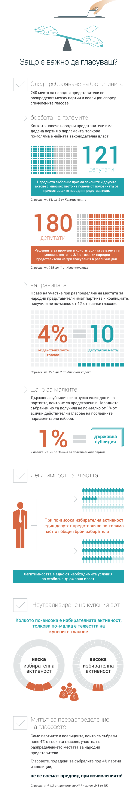

Научи повече
защо е важно да се гласува и как можеш да гласуваш.
Научи повече
защо е важно да се гласува и как можеш да гласуваш.

NextМного хора изпитват трудност когато дойде момента да гласуват понеже трябва да пътуват в друг град където им е постоянния адрес и това е свързано с разходи и време. Тука предоставяме информация как може да гласуваш с непостоянен адрес, за да си спестиш главоболието. Как да гласувам по настоящ адрес? Внимание! Срокът за подаване на заявление за гласуване по настоящ адред е 20-ти септември. Ако не успеете да се регистрирате до тази дата, ще трябва да гласувате по постоянен. За да гласувате по настоящ адрес е необходимо първо да имате изкарано удостоверение от общината. Ако имате такова - необходимо е просто да отидете в общината с уверението и личната си карта (с паспорт не може) и ще Ви дадат една бланка. Когато я попълните ще Ви кажат „Ако не ви потърсим, значи ще гласувате тук.“ Цялата процедура отнема 2 минути ако няма опашка. Ако нямате такова уверение, ще се наложи първо да си изкарате. Процедурата е малко по-дълга - около 15 минути и трябва да накарате вашият хазяин да дойде с вас в общината. Той трябва да си носи личната карати и нотариално заверен документ, че е собственик на апартамента, който обитавате. Вие трябва да си носите личната карта (Може и паспорт). Там ще ви дадат документи, които да попълните. Има и малка такса от около 4-5 лева.
Гласуване в чужбина
Карта на изборите в чужбина от Glasuvam.org